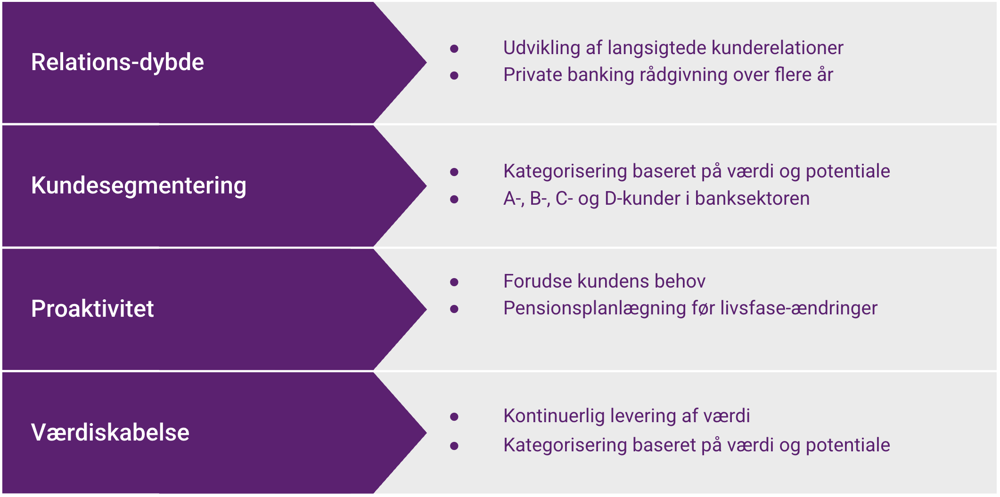

Portefølje Salg

Portefølje salg fokuserer på at udvikle og vedligeholde langsigtede kunderelationer i finanssektoren. I stedet for kun at fokusere på det næste nye salg, handler det om at maksimere værdien af de kunder, man allerede har. Denne tilgang er særligt relevant for komplekse finansielle løsninger og højværdi-kunder, hvor livstidsværdien (Customer Lifetime Value - CLV) af kunder kan være betydelig.
I dette kapitel ser vi på:
- Grundprincipperne i portefølje salg
- Kundesegmentering og -pleje
- Share-of-wallet strategier
- Praktiske eksempler fra finanssektoren
Podcast om portefølje salg
Podcast om portefølje salgGrundprincipperne i Portefølje Salg
Porteføljetankegangen i salg er ikke opstået ud af det blå, men bygger på flere årtiers udvikling inden for salgsteori og forretningsstrategi. Mens klassisk salg fokuserede på den enkelte transaktion, begyndte man i løbet af det 20. århundrede at erkende værdien af langsigtede kunderelationer, især i B2B-markeder.
Centrale Historiske Koncepter:
- Pareto-princippet (80/20-reglen): Observeret af Vilfredo Pareto i starten af 1900-tallet og populariseret af Joseph M. Juran i 1940'erne. Anvendt på salg betyder det ofte, at ca. 80% af omsætningen kommer fra ca. 20% af kunderne. Dette understreger den økonomiske nødvendighed af at identificere og pleje de mest værdifulde kunder.
- Key Account Management: Opstod som en formaliseret disciplin i 1970'erne og 80'erne. Virksomheder indså, at deres største og mest strategisk vigtige kunder (Key Accounts) krævede en anden, mere partnerskabsorienteret tilgang end den brede kundemasse. Dette indebar dedikerede teams, dybere kunderelationer og fokus på gensidig værdiskabelse.
- Customer Relationship Management (CRM): Fremkomsten af CRM-systemer fra 1990'erne og frem gav virksomhederne de teknologiske værktøjer til systematisk at indsamle data om kunder, segmentere dem og styre relationerne mere effektivt.
- Customer Lifetime Value: Et koncept der vandt frem med relationsmarkedsføring. Customer Lifetime Value fokuserer på den samlede værdi, en kunde repræsenterer over hele den periode, de er kunde hos virksomheden, frem for blot værdien af en enkelt transaktion. Dette skiftede fokus mod kundefastholdelse og udvikling.
- Share-of-Wallet: Relateret til Customer Lifetime Value og Key Account Management. Share-of-Wallet refererer til den andel af en kundes samlede forbrug inden for en bestemt produkt- eller servicekategori, som går til én specifik virksomhed. For en bank handler det f.eks. om, hvor stor en andel af kundens samlede lån, opsparing, investeringer og forsikringer, der er placeret hos netop denne bank. Et centralt mål i porteføljesalg er at øge sin Share-of-Wallet hos de værdifulde kunder ved at dække flere af deres behov.
Samlet set flytter porteføljesalg fokus fra kortsigtet transaktionsjagt til langsigtet relationsopbygning og værdimaksimering af den eksisterende kundebase, herunder en øget Share-of-Wallet hos nøglekunder.

| Princip | Beskrivelse | Finansielt Eksempel |
|---|---|---|
| Relationsdybde | Udvikling af langsigtede kunderelationer | Private banking rådgivning over flere år |
| Kundesegmentering | Kategorisering baseret på værdi og potentiale | A-, B-, C- og D-kunder i banksektoren |
| Proaktivitet | Forudse kundens behov | Pensionsplanlægning før livsfaseændringer |
| Værdiskabelse | Kontinuerlig levering af værdi | Regelmæssige porteføljeoptimeringer |
Kundesegmentering i Finanssektoren
| Segment | Karakteristika | Servicestrategi | Eksempel |
|---|---|---|---|
| A-kunder (Nøglekunder) |
Høj værdi Højt potentiale Strategisk betydning |
Dedikeret rådgiver Proaktiv kontakt Skræddersyede løsninger |
Private banking kunder med 5+ mio. kr. i aktiver |
| B-kunder (Vækst-kunder) |
Moderat værdi Højt potentiale Udviklingspotentiale |
Dedikeret team Regelmæssig kontakt Udviklingsfokus |
Erhvervskunder med vækstambitioner |
| C-kunder (Vedligeholdelse) |
Moderat værdi Moderat potentiale Stabil relation |
Teambaseret service Periodisk kontakt Standardiserede løsninger |
Standard bankkunder med grundlæggende produkter |
| D-kunder (Transformation) |
Lav værdi Lavt potentiale Omkostningstunge |
Digitaliseret service Migrering til anden model Rentabilitetsforbedring |
Kunder med få produkter og lav aktivitet |
Case: Portefølje Management i Praksis
Situation: En private banking afdeling med fokus på højværdi-kunder
Portefølje Strategi:
| Segment | Kontaktfrekvens | Serviceniveau | Mål |
|---|---|---|---|
| A-kunder | Månedlig kontakt Kvartalsvise møder |
Dedikeret rådgiver 24/7 adgang Skræddersyede løsninger |
Share-of-wallet >80% Livstidsværdi optimering |
| B-kunder | Kvartalsvis kontakt Halvårlige møder |
Dedikeret team Prioriteret service Udviklingsplaner |
Share-of-wallet >50% Vækst i kundeværdi |
| C-kunder | Halvårlig kontakt Årlige møder |
Teambaseret service Standardiserede løsninger Digital selvbetjening |
Share-of-wallet >30% Kosteffektiv service |
Resultat: Systematisk portefølje management resulterer i:
- Højere kundetilfredshed
- Øget share-of-wallet
- Bedre kundebevarelse
- Højere rentabilitet
Cases: Portefølje Management i Praksis
Case: Forsikringsmægler (Erhvervskunder)
Situation: En forsikringsmægler specialiseret i erhvervsforsikringer ønsker at optimere servicen og øge salget til deres eksisterende kundeportefølje.
Portefølje Strategi & Segmentering:
| Segment | Karakteristika | Servicestrategi & Mål |
|---|---|---|
| A-kunder (Store/Komplekse) | Høj præmievolumen Komplekse risici Flere selskaber involveret Potentiale for rådgivning |
Dedikeret Mægler/Account Manager. Årlige strategiske risiko-reviews. Proaktiv information om markedsændringer. Kvartalsvise statusmøder. Mål: Fastholdelse >95%, Øge share-of-wallet (f.eks. nye dækninger, risk management services), Høj kundetilfredshed (NPS). |
| B-kunder (Mellemstore/Standard) | Moderat præmievolumen Standardrisici Primært ét selskab |
Fast kontaktperson (evt. delt). Årligt service/review-møde. Reaktiv support + standard nyhedsbreve. Fokus på optimering af eksisterende dækninger. Mål: Fastholdelse >90%, Identificere uopdagede behov (f.eks. cyber, bestyrelsesansvar), Effektiv service. |
| C-kunder (Små/Simple) | Lav præmievolumen Simple risici (f.eks. enkeltmandsvirksomhed) |
Serviceteam/pool. Primært digital/telefonisk kontakt. Standardiserede pakkeløsninger. Fokus på effektiv administration og online selvbetjening. Mål: Høj grad af automatisering, Lav omkostning pr. kunde, Overførsel til online platforme. |
Resultat: Ved at differentiere serviceniveauet baseret på kundernes værdi og kompleksitet kan mægleren allokere ressourcerne mere effektivt, styrke relationerne til de vigtigste kunder og øge rentabiliteten på tværs af porteføljen.
Case: Revisions- & Rådgivningshus (SMV-segmentet)
Situation: Et revisions- og rådgivningshus servicerer en bred vifte af Små og Mellemstore Virksomheder (SMV'er) og ønsker at øge værdien pr. kunde.
Portefølje Strategi & Share-of-Wallet:
Firmaet segmenterer kunderne ikke kun efter størrelse, men også efter potentiale for rådgivningsydelser udover den lovpligtige revision.
| Segment | Karakteristika | Strategi & Fokusområder |
|---|---|---|
| A: Vækstvirksomheder (Højt potentiale) | Ambitiøse vækstplaner Behov for strategisk sparring Ofte mere komplekse transaktioner |
Strategi: Partnerdrevet relation, proaktiv rådgivning. Fokus: Udover revision -> Skatteoptimering, budgettering & forecasting, finansieringsrådgivning, M&A support, internationalisering. Mål: Blive foretrukken strategisk rådgiver, høj share-of-wallet på rådgivning. |
| B: Stabile SMV'er (Moderat potentiale) | Stabil drift Primært behov for compliance (revision, regnskab) Lejlighedsvist behov for specifik rådgivning |
Strategi: Effektiv leverance af kerneydelser (revision/regnskab), relationspleje via fast kontaktperson. Fokus: Sikre effektiv revision/regnskabsassistance. Identificere muligheder for -> Digitalisering af bogholderi, optimering af selskabsstruktur, generationsskifteplanlægning. Mål: Høj kundetilfredshed med kerneydelser, mersalg af relevante standard-rådgivningspakker. |
| C: Mindre virksomheder/Håndværkere (Lavt potentiale) | Fokus på drift og mindre administration Primært behov for assistance til bogføring og simpel årsrapport |
Strategi: Standardiserede processer, høj grad af digitalisering/automatisering. Fokus: Effektiv bogføringsassistance, standard årsrapport-pakke. Minimere manuel håndtering. Mål: Høj effektivitet, lav omkostning pr. kunde, rentabilitet via volumen og standardisering. |
Resultat: Ved at forstå de forskellige segmenters behov og potentiale, kan revisionshuset målrette deres rådgivningsindsats, udvikle relevante servicepakker og dermed øge den samlede værdi (share-of-wallet) fra deres eksisterende kundebase, samtidig med at de sikrer en rentabel servicering af alle kundetyper.
Share-of-wallet Strategier
| Kundelivsfase | Primære behov | Sekundære behov | Proaktive muligheder |
|---|---|---|---|
| Ung voksen (18-30 år) |
Studielån Budgetkonto Betalingskort |
Bilforsikring Rejseforsikring Basispension |
Pensionsrådgivning ved første job Automatisk opsparing |
| Etablering (25-40 år) |
Boliglån Indboforsikring Livsforsikring |
Børneopsparing Budgetværktøjer Formuerådgivning |
Forsikringspakke ved boligkøb Børneopsparing ved familieplanlægning |
| Konsolidering (35-55 år) |
Pensionsoptimering Investeringspleje Familieforsikring |
Erhvervsløsninger Skatteoptimering Boligfinansiering |
Helhedsrådgivning om formue Skatteoptimering |
| Seniorplanlægning (50-70 år) |
Nedsparing Arveplanægning Sundhedsforsikring |
Formidling af friværdi Investeringsrådgivning Testamenteplanlægning |
Pensionsworkshops Private banking introduktion |
Værktøjer til Portefølje Management
Nøgleværktøjer:
| Værktøj | Formål | Eksempel |
|---|---|---|
| Kunde-rentabilitetsanalyse | Beregning af faktisk profitabilitet | Omkostning vs. indtægt pr. kunde |
| Produktdækningsmatrix | Visualisering af kundens produkter | Gap-analyse af produkter |
| Key Account Plan | Handlingsplan for nøglekunder | 12-24 måneders udviklingsplan |
Typiske Udfordringer og Løsninger
| Udfordring | Konsekvens | Løsning |
|---|---|---|
| Manglende segmentering | Ineffektiv ressourceallokering | Systematisk kundekategorisering |
| Reaktiv tilgang | Missede muligheder | Proaktiv kundepleje |
| Manglende data | Upræcis beslutningstagning | CRM-system og analytics |
Anekdote: Konsulenten der kendte sine kunder
En historie fortæller om et konsulentfirma, der var ved at miste pusten. De jagtede konstant nye kunder, men brugte få ressourcer på de eksisterende. En ny partner analyserede kundeporteføljen og fandt, at 15% af kunderne stod for 75% af omsætningen og næsten hele overskuddet (Pareto i praksis!). Firmaet ændrede strategi: De dedikerede erfarne konsulenter til at pleje disse nøglekunder (Key Accounts), forstå deres forretning dybere og proaktivt foreslå nye projekter. Samtidig standardiserede de servicen til de mindre kunder. Resultatet var øget loyalitet hos nøglekunderne, større projekter (højere share-of-wallet) og markant forbedret rentabilitet, selvom antallet af nye kunder faldt i en periode.
Non-finansielt eksempel: SaaS Virksomhed
En Software-as-a-Service (SaaS) virksomhed, der sælger et projektstyringsværktøj, bruger porteføljestyring:
- Segmentering: Kunder opdeles efter størrelse (enkeltbruger, lille team, enterprise), branche og brugsmønster (aktivitet, funktionsbrug).
- A-kunder (Enterprise): Får en dedikeret Customer Success Manager, kvartalsvise strategimøder, adgang til beta-features, skræddersyet onboarding. Mål: Høj 'Net Revenue Retention' (fastholdelse + mersalg).
- B-kunder (Teams): Får adgang til webinars, proaktive tips via e-mail, support via chat/telefon inden for 24 timer. Mål: Øget funktionsbrug, opgradering til højere planer.
- C/D-kunder (Enkeltbrugere/Gratis): Primært digital selvbetjening, community forum, automatiserede onboarding-flows. Mål: Konvertering til betalt plan, lav support-omkostning.
Ved at tilpasse indsatsen sikrer virksomheden både kundefastholdelse hos de store kunder og effektiv håndtering af den brede masse.